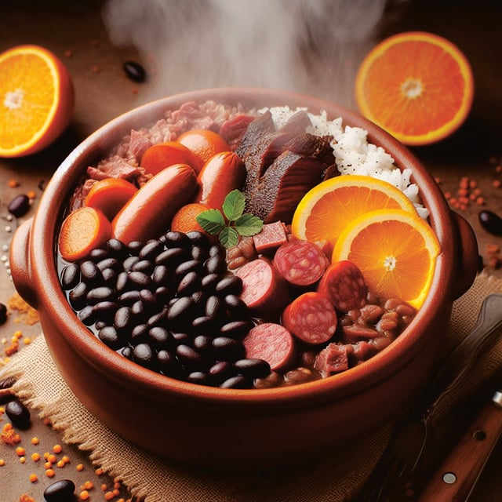

Feijoada

Description
Feijoada is a traditional Brazilian stew made with black beans and a variety of pork or
beef products. It's a hearty, flavorful dish that's often enjoyed with rice and orange slices.
Ingredients
- 500g black beans
- 200g pork belly
- 200g smoked sausage
- 200g beef (chuck or brisket)
- 1 onion, chopped
- 4 cloves garlic, minced
- 2 bay leaves
- Salt and pepper to taste
- 1 tablespoon olive oil
- Water
Steps
- Soak the Beans: Soak the black beans in water overnight.
- Cook the Beans: In a large pot, add the soaked beans, bay leaves, and enough water to cover the beans. Bring to a boil, then simmer.
- Prepare the Meat: In a separate pan, heat olive oil and cook the pork belly, sausage, and beef until browned. Add the onion and garlic, cooking until softened.
- Combine: Add the browned meat and aromatics to the pot with the beans. Simmer for 1-2 hours until the beans and meat are tender. Season with salt and pepper.
- Serve: Serve hot with rice and orange slices on the side.